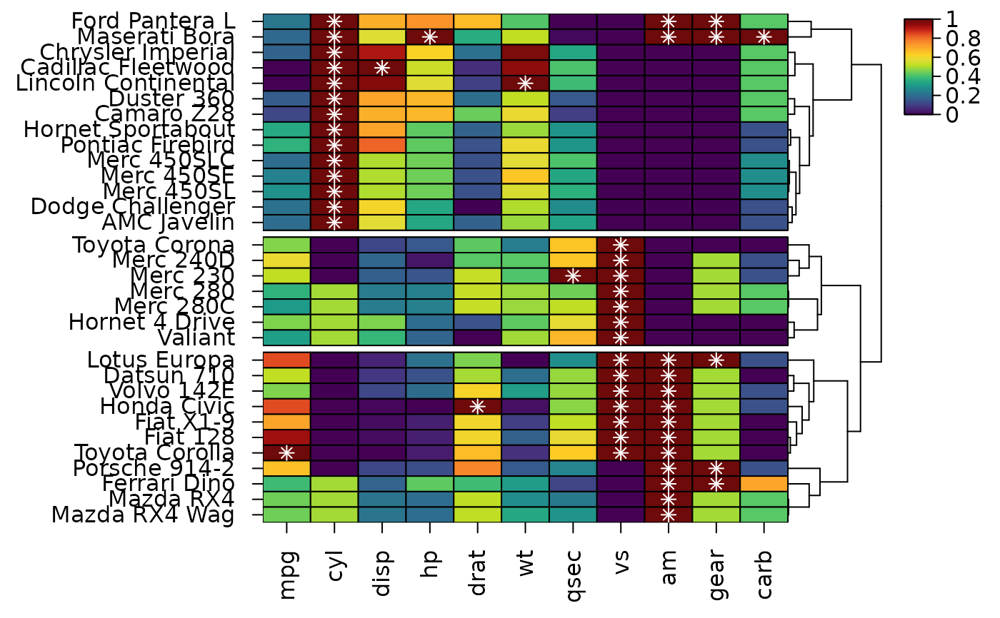

heat_map_data() returns what a heatmap shows as a data.frame with one
row per cell, row, column or dendrogram segment, positioned as they are in
the heatmap. Use it to rebuild or extend a heatmap with ggplot2 or
other tools, to add to a heatmap with base graphics, or to export the
displayed values, colours and clusters.
Usage
heat_map_data(x, what = c("cells", "rows", "columns", "tree_x", "tree_y"))Arguments
- x
object of class
heat_mapreturned byheat_map.- what
the table to return:
"cells"(the default),"rows","columns", or the dendrogram segments"tree_x"(columns) or"tree_y"(rows).
Value
a data.frame:
"cells": one row per cell, from the top left of the heatmap along each row, with therowandcolumnnames, theirrow_indexandcol_indexin the original data,display_row,display_col,xandy, the displayedvalue(after any scaling),levelfor non-numeric columns, the fillcolour, relativesizeandshape(seecell_shapeinheat_map),split_valueandsplit_colourfor split cells (cell_split), and therow_clusterandcol_clusterwhen rows or columns are split into clusters."rows","columns": one row per row (from the top) or column (from the left), with its name, index in the original data, display position, centre (yorx), axis text (label),clusterwhen there are clusters, and the values of any annotations (annotation_yorannotation_x)."tree_x","tree_y": one row per dendrogram segment, from (x,y) to (xend,yend). Along the heatmap the segments are in plot co-ordinates; across it they are the branch heights, from 0 at the leaves. Branch support is added assupport(seetree_support_x).NULLwhen the heatmap has no such dendrogram.
Details
Positions are given in two ways. display_row and display_col
count rows from the top and columns from the left of the heatmap.
x and y are the centres of the cells in the heatmap's plot
co-ordinates - one unit per cell plus any gaps between clusters, with
y increasing upwards - so ggplot(cells, aes(x, y)) +
geom_tile() lays the cells out as in the heatmap, and base graphics drawn
on the heatmap's device after heat_map() land on its cells.
See also
heat_map_info for the same information as matrices
and vectors, and heat_map_grob to combine heatmaps with
ggplot2 plots.
Examples
hm <- heat_map(
mtcars,
scale = "column",
tree_y = TRUE,
tree_cut_y = 3,
popup = FALSE
)
#> Applying range scaling to each column...
cells <- heat_map_data(hm)
head(cells)
#> row column row_index col_index display_row display_col x
#> 1 Ford Pantera L mpg 29 1 1 1 0.5
#> 2 Ford Pantera L cyl 29 2 1 2 1.5
#> 3 Ford Pantera L disp 29 3 1 3 2.5
#> 4 Ford Pantera L hp 29 4 1 4 3.5
#> 5 Ford Pantera L drat 29 5 1 5 4.5
#> 6 Ford Pantera L wt 29 6 1 6 5.5
#> y value colour size shape row_cluster
#> 1 32.39679 0.2297872 #2A778EFF 1 rect 1
#> 2 32.39679 1.0000000 #6E0A0AFF 1 rect 1
#> 3 32.39679 0.6981791 #FBAF29FF 1 rect 1
#> 4 32.39679 0.7491166 #F9932AFF 1 rect 1
#> 5 32.39679 0.6728111 #FCBC28FF 1 rect 1
#> 6 32.39679 0.4236768 #53C568FF 1 rect 1
# The displayed values, rows in the order of the heatmap
rows <- heat_map_data(hm, "rows")
head(rows)
#> row row_index display_row y label
#> 1 Ford Pantera L 29 1 32.39679 Ford Pantera L
#> 2 Maserati Bora 31 2 31.39679 Maserati Bora
#> 3 Chrysler Imperial 17 3 30.39679 Chrysler Imperial
#> 4 Cadillac Fleetwood 15 4 29.39679 Cadillac Fleetwood
#> 5 Lincoln Continental 16 5 28.39679 Lincoln Continental
#> 6 Duster 360 7 6 27.39679 Duster 360
#> cluster
#> 1 1
#> 2 1
#> 3 1
#> 4 1
#> 5 1
#> 6 1
# Mark the highest value of each column on the heatmap
top <- cells[ave(cells$value, cells$column, FUN = max) == cells$value, ]
points(top$x, top$y, pch = 8, col = "white")
